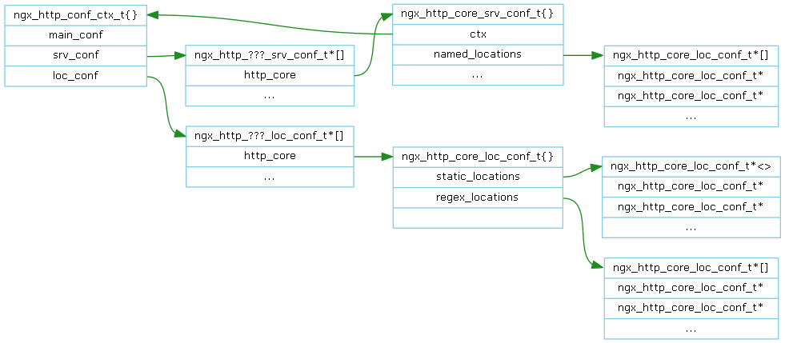
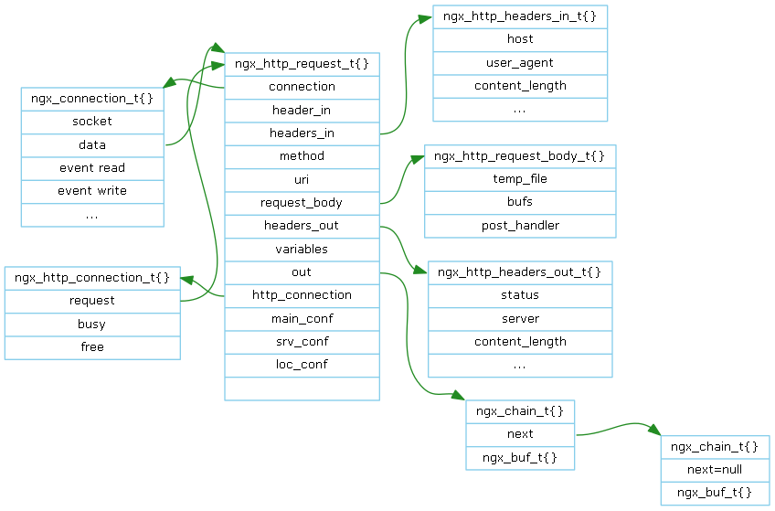

Server代表一个Web（虚拟）服务器， 对应于配置文件中的一个server指令。
每个模块可以有专有的数据结构来表示，并用模块的回调函数create_srv_conf来创建。
ngx_http_core_srv_conf_tngx_http_upstream_keepalive_srv_conf_t ngx_http_upstream_least_conn_conf_t 一个Server对应的多个数据结构如下表示：
ngx_http_???_srv_conf_t[]数组管理所有HTTP Module对应的Server数据结构指针，如果模块没有Server数据结构则指针为空。
从Server的ngx_http_core_srv_conf_t出发通过ctx，ngx_http_ctx_t，ngx_http_???_srv_conf_t[]可以找到任一模块的Server数据结构。
多个Server 配置解析完成后以如下方式组织：
解析http配置指令后，创建ngx_http_conf_ctx_t{A}和ngx_http_core_srv_conf_t{A}，配置上下文指向ngx_http_conf_ctx_t{A}。
解析server配置指令后，创建ngx_http_conf_ctx_t{B}和ngx_http_core_srv_conf_t{B}，
配置上下文指向ngx_http_conf_ctx_t{A}，并将ngx_http_core_srv_conf_t{B}加入ngx_http_core_main_conf_t::servers数组。
配置指令 request_pool_size 配置Server下每个请求的内存池大小，保存在ngx_http_core_srv_conf_t。
通常 request_pool_size 配置在 server{} 之中，表示这是这个Server下所有请求的内存池大小。如果所有的Server都使用相同的值，即需要在每个Server中重复配置。
当 request_pool_size 配置在 http{} 之中时，表示这是所有Server下所有请求的内存池大小。
解析http配置指令后，进入http{}，解析request_pool_size后将值保存在ngx_http_conf_ctx_t{A}下的ngx_http_core_srv_conf_t{A}。
解析server配置指令后，进入server{}，解析request_pool_size后将值保存在后将值保存在ngx_http_conf_ctx_t{B}下的ngx_http_core_srv_conf_t{B}。
Merge实际上是一个简单的过程，如果server{}没有配置request_pool_size而http{}有，则ngx_http_core_srv_conf_t{B}使用ngx_http_core_srv_conf_t{A}的request_pool_size。
Merge之后多个Server以如下方式管理：
从上述二图可以推出由全局变量ngx_cycle出发可以找到任何一个模块的Server数据结构。
Server Address Port配置解析完成后管理如下：
ngx_http_optimize_servers() 根据上述数据创建ngx_listening_t (参见Nginx Event Mechanism)
当收到请求后，需要根据Address Port URL Host找到所属的Server。
在ngx_http_init_request()中根据上图先找到默认的Server，当URL Host得到后再通过ngx_http_find_virtual_server()重新查找所属的Server。
一个Location对应于配置文件中的一个location指令。[TODO]what is location?
每个模块可以有专有的数据结构来表示，并用模块的回调函数 create_loc_conf 来创建。
ngx_http_core_loc_conf_tngx_http_index_loc_conf_t 一个Location对应的多个数据结构如下表示：
ngx_http_???_loc_conf_t[] 数组管理所有HTTP Module对应的Location数据结构指针，如果模块没有Location数据结构则指针为空。
从 ngx_http_core_loc_conf_t 出发通过loc_conf，ngx_http_???_loc_conf_t[]可以找到任一模块的Location数据结构。
一个Server下多个Location 配置解析完成后以如下方式组织：

ngx_http_core_srv_conf_t::named_locations 。
已知Server的情况下，根据URL查找Location。 ngx_http_core_find_location()

Nginx对Request的处理划分为10个阶段(Phase)。
各个HTTP Phase Handler类型的模块在postconfiguration回调函数中向各阶段注册回调函数来实现模块功能。
例如http_static_module模块在ngx_http_static_init()向NGX_HTTP_CONTENT_PHASE阶段注册了ngx_http_static_handler()：
ngx_http_module_t ngx_http_static_module_ctx = {
NULL, /* preconfiguration */
ngx_http_static_init, /* postconfiguration */
...
};
......
static ngx_int_t ngx_http_static_init(ngx_conf_t *cf)
{
ngx_http_handler_pt *h;
ngx_http_core_main_conf_t *cmcf;
cmcf = ngx_http_conf_get_module_main_conf(cf, ngx_http_core_module);
h = ngx_array_push(&cmcf->phases[NGX_HTTP_CONTENT_PHASE].handlers);
if (h == NULL) {
return NGX_ERROR;
}
*h = ngx_http_static_handler;
return NGX_OK;
}
注册完成后如下图的phases所管理二维数组所示：
因为是在模块的postconfiguration回调函数注册的，所以各个模块的次序决定了各个阶段处理函的次序。
各个内部模块的次序是在配置脚本中(硬编码)指定的，这是一个很不方便也是容易出错的方法，另一方面外部模块总是在末尾(参见auto/modules HTTP_MODULES)。
建议在各模块中设定优先级，启动时根据优先级排序。
Nginx遍历此二维数组，即可完成请求处理。但为了达到更佳的性能，由phase_engine重新组织了二维数组。
遍历一维数组优于遍历二维数组。ngx_http_init_phase_handlers()将二维数组归并为一个一维数组，并用next指示出下一阶段开始的index。

Nginx依次调用此一维数组的回调函数，当所属的阶段需结束处理，则通过next找到下一阶段的回调函数继续处理。 ngx_http_request_t的phase_handler是此一维数组的index，表示正在处理的回调函数。 当资源没有就绪时，遍历过程暂时停止，一旦就绪，在事件回调函数中从phase_handler所指的位置继续遍历。
由函数ngx_http_core_run_phases()遍历并调用回调处理函数。下表是关于回调函数返回值的处理方法小结：
| Phase | 下一回调 | 下一阶段 | 暂时停止 | 结束遍历 |
| POST_READ | NGX_DECLINED | NGX_OK | NGX_AGAIN, NGX_DONE | ERRORS |
| SERVER_REWRITE | NGX_DECLINED | -- | -- | ERRORS |
| FIND_CONFIG | -- | -- | -- | -- |
| REWRITE | NGX_DECLINED | -- | -- | ERRORS |
| POST_REWRITE | -- | -- | -- | -- |
| PREACCESS | NGX_DECLINED | NGX_OK | NGX_AGAIN, NGX_DONE | ERRORS |
| ACCESS | NGX_DECLINED if satisfy_all NGX_OK |
if satisfy_any NGX_OK | NGX_AGAIN, NGX_DONE | ERRORS |
| POST_ACCESS | -- | -- | -- | -- |
| TRY_FILES | -- | -- | -- | -- |
| CONTENT | NGX_DECLINED | -- | -- | NOT NGX_DECLINED |
参考 http_concat_module
ngx_modules[] 。 config脚本中完成。如何让configure执行config呢？
在configure加入--add-module=/path/to/module参数指定外部模块的目录。configure执行时根据它找到config并执行。
共有二个过滤器串：Header和Body。
Header过滤器串的作用是对Response Header作检查、修改，最后由ngx_http_header_filter
将ngx_http_request_t::headers_out组成字符串并由ngx_http_write_filter
加入发送队列ngx_http_request_t::out。
Body过滤器串的作用是对Response Body作检查、修改，最后由ngx_http_write_filter加入发送队列ngx_http_request_t::out并将Response发送出去。
在源文件ngx_http_core_module.c中有二个全局函数指针变量 ngx_http_top_header_filter和ngx_http_top_body_filter。
它们分别是Header过滤器串和Body过滤器串的开始。
各个HTTP Filter 类型的模块在postconfiguration回调函数中注册回调函数来实现模块功能。 各个内部模块的次序是在配置脚本中(硬编码)指定的。 外部Header过滤器总是被加在http_headers_filter之后http_userid_filter之前。 外部Body过滤器总是被加在http_copy_filter之后http_charset_boy_filter之前。
例如http_not_modified_filter_module模块在ngx_http_not_modified_filter_init()向Header过滤器串注册了ngx_http_not_modified_header_filter()：
static ngx_http_module_t ngx_http_not_modified_filter_module_ctx = {
NULL, /* preconfiguration */
ngx_http_not_modified_filter_init, /* postconfiguration */
...
};
......
static ngx_int_t ngx_http_not_modified_filter_init(ngx_conf_t *cf)
{
ngx_http_next_header_filter = ngx_http_top_header_filter;
ngx_http_top_header_filter = ngx_http_not_modified_header_filter;
return NGX_OK;
}
ngx_http_top_header_filter指向源文件ngx_http_not_modified_filter_module.c的函数ngx_http_not_modified_header_filter()。
在源文件ngx_http_not_modified_filter_module.c有函数指针ngx_http_next_header_filter，它指向源文件ngx_http_header_filter_module.c的函数ngx_header_header_filter()。
ngx_header_header_filter()的下一个过滤器一定是ngx_http_write_filter()，所以源文件ngx_http_header_filter_module.c中没有ngx_http_next_header_filter。
ngx_http_write_filter()作为最后一个过滤器，所以源文件ngx_http_write_filter_module.c中没有ngx_http_next_body_filter。
ngx_http_send_header()调用由ngx_http_top_header_filter指向的ngx_http_not_modified_header_filter()。ngx_http_not_modified_header_filter()做完自身的过滤操作后，调用由ngx_http_next_header_filter指向的ngx_header_header_filter()。ngx_header_header_filter()做完过滤操作后，调用ngx_http_write_filter()后Header过滤完成。Body同理。
参考 http_copyleft_module
config脚本中完成。如何让configure执行config呢？
在configure加入--add-module=/path/to/module参数指定外部模块的目录。configure执行时根据它找到config并执行。